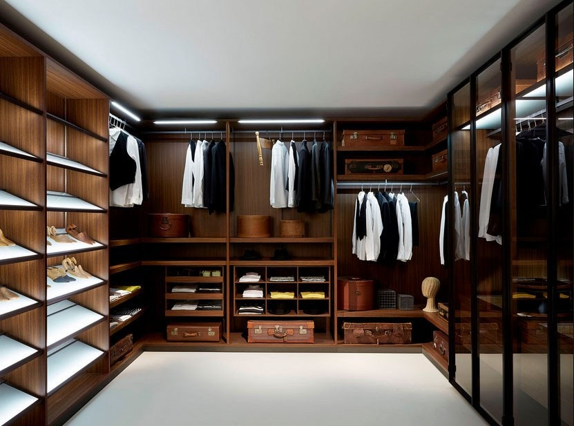

Welcome to Mens Cave Wardrobe
Here you find trending outfits, to fit in any meeting, occasion, and work outfits. Having a good sense of dressing for the right occasion or environment, speaks more about an individual
Why all men really need to start The pilot control of their wellness
Most men suffer hidden break downs, both physically and mentally. The time is now to start doing the things that will improve your wellbeing. This is one very good health tips, on the top list of Men’s Cave topics:
For energy and disease prevention, men should eat whole grains such as whole-grain bread, pasta, cereal, brown rice, oats, barley, beans, lentils, fruits and vegetables. These foods are high in fiber, help manage hunger and fullness and help fend off certain cancers, such as prostate and colon, keeping us stress free. When we think about trying to lower high blood pressure, we usually think of limiting salt and processed foods.
But a heart healthy diet is more than just lowering your sodium intake. which is specifically designed to help manage blood pressure, emphasizes eating many fruits, vegetables, low-fat dairy, and other fiber-rich foods. Men need to reconsider work related environment, and sitting for a longer period of time, due to postrate cancer.
Take a look at just some of these stats below:
• Men are three times more likely to take their own lives than women.
• Men in mid-life remain overwhelmingly dependent on a female partner for emotional support.
• Marriage breakdown is more likely for men to lead to suicide.
• Men have a much more negative view on counseling and therapy than women.
• When men do use therapy, it is at the point of crisis.
• Men between the ages of 18 and 44 are less likely to go see a doctor than women.
• 67 per cent of men feel their mental health is secondary to that of a partner.
The list is never ending. It's really clear that we need assistance to a better holistic approach to our wellbeing. I guess not and the truth is this: It is a two way thing, encouraging one another to be at their best. Men do stand to benefit more from an holistic approach to wellness.